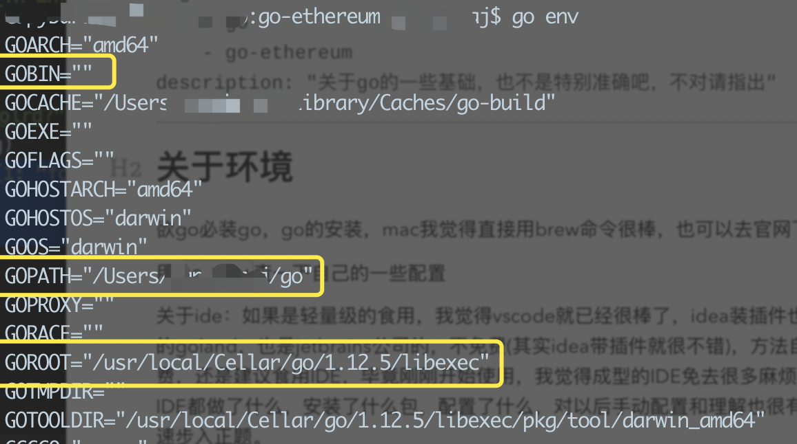
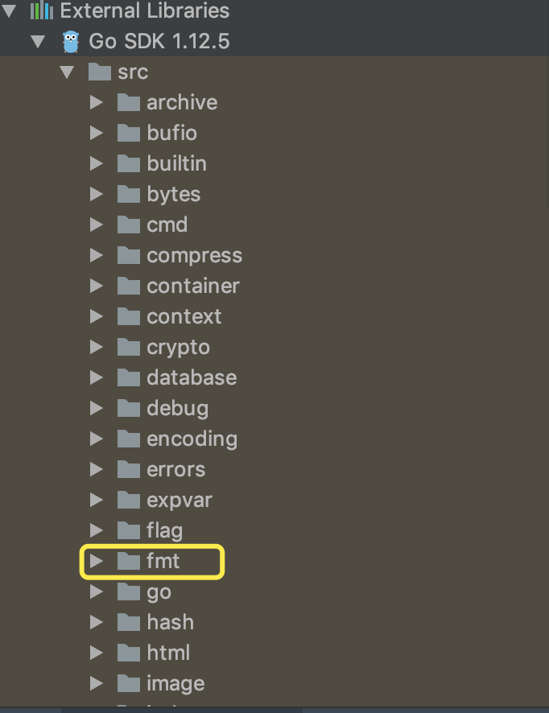

<!DOCTYPE html>
<html>
<head><meta name="generator" content="Hexo 3.8.0">

    <!--[if lt IE 9]>
        <style>body {display: none; background: none !important} </style>
        <meta http-equiv="Refresh" Content="0; url=//outdatedbrowser.com/" />
    <![endif]-->

<meta charset="utf-8">
<meta http-equiv="X-UA-Compatible" content="IE=edge, chrome=1">
<meta name="viewport" content="width=device-width, initial-scale=1, maximum-scale=1, user-scalable=no">
<meta name="format-detection" content="telephone=no">
<meta name="author" content="CapybaraJ">


<meta name="description" content="关于go的一些基础，也不是特别准确吧，不对请指出">
<meta name="keywords" content="go,go-ethereum">
<meta property="og:type" content="article">
<meta property="og:title" content="Go半小时入坑">
<meta property="og:url" content="http://yoursite.com/2019/06/11/gobase/index.html">
<meta property="og:site_name" content="Capybara&#39;s md">
<meta property="og:description" content="关于go的一些基础，也不是特别准确吧，不对请指出">
<meta property="og:locale" content="default">
<meta property="og:image" content="http://yoursite.com/2019/06/11/gobase/image-20190611162121830.png">
<meta property="og:image" content="http://yoursite.com/2019/06/11/gobase/image-20190611154854535.png">
<meta property="og:updated_time" content="2019-06-11T11:05:22.171Z">
<meta name="twitter:card" content="summary">
<meta name="twitter:title" content="Go半小时入坑">
<meta name="twitter:description" content="关于go的一些基础，也不是特别准确吧，不对请指出">
<meta name="twitter:image" content="http://yoursite.com/2019/06/11/gobase/image-20190611162121830.png">

<link rel="apple-touch-icon" href="/apple-touch-icon.png">


    <link rel="alternate" href="/atom.xml" title="Capybara&#39;s md" type="application/atom+xml">


    <link rel="shortcut icon" href="/favicon.png">


    <link href="//cdn.bootcss.com/animate.css/3.5.1/animate.min.css" rel="stylesheet">


    <link href="//cdn.bootcss.com/fancybox/2.1.5/jquery.fancybox.min.css" rel="stylesheet">


    <script src="//cdn.bootcss.com/pace/1.0.2/pace.min.js"></script>
    <link href="//cdn.bootcss.com/pace/1.0.2/themes/blue/pace-theme-minimal.css" rel="stylesheet">


<link rel="stylesheet" href="/css/style.css">


<link href="//cdn.bootcss.com/font-awesome/4.6.3/css/font-awesome.min.css" rel="stylesheet">


<title>Go半小时入坑 | Capybara&#39;s md</title>

<script src="//cdn.bootcss.com/jquery/2.2.4/jquery.min.js"></script>
<script src="//cdn.bootcss.com/clipboard.js/1.5.10/clipboard.min.js"></script>

<script>
    var yiliaConfig = {
        fancybox: true,
        animate: true,
        isHome: false,
        isPost: true,
        isArchive: false,
        isTag: false,
        isCategory: false,
        fancybox_js: "//cdn.bootcss.com/fancybox/2.1.5/jquery.fancybox.min.js",
        scrollreveal: "//cdn.bootcss.com/scrollReveal.js/3.1.4/scrollreveal.min.js",
        search: false
    }
</script>


    <script> yiliaConfig.jquery_ui = [false]; </script>


    <script> yiliaConfig.rootUrl = "\/";</script>


</head></html>
<body>
  <div id="container">
    <div class="left-col">
    <div class="overlay"></div>
<div class="intrude-less">
    <header id="header" class="inner">
        <a href="/" class="profilepic">
            
        </a>
        <hgroup>
          <h1 class="header-author"><a href="/">CapybaraJ</a></h1>
        </hgroup>

        

        


        
            <div id="switch-btn" class="switch-btn">
                <div class="icon">
                    <div class="icon-ctn">
                        <div class="icon-wrap icon-house" data-idx="0">
                            <div class="birdhouse"></div>
                            <div class="birdhouse_holes"></div>
                        </div>
                        <div class="icon-wrap icon-ribbon hide" data-idx="1">
                            <div class="ribbon"></div>
                        </div>
                        
                        <div class="icon-wrap icon-link hide" data-idx="2">
                            <div class="loopback_l"></div>
                            <div class="loopback_r"></div>
                        </div>
                        
                        
                        <div class="icon-wrap icon-me hide" data-idx="3">
                            <div class="user"></div>
                            <div class="shoulder"></div>
                        </div>
                        
                    </div>
                    
                </div>
                <div class="tips-box hide">
                    <div class="tips-arrow"></div>
                    <ul class="tips-inner">
                        <li>菜单</li>
                        <li>标签</li>
                        
                        <li>友情链接</li>
                        
                        
                        <li>关于我</li>
                        
                    </ul>
                </div>
            </div>
        

        <div id="switch-area" class="switch-area">
            <div class="switch-wrap">
                <section class="switch-part switch-part1">
                    <nav class="header-menu">
                        <ul>
                        
                            <li><a href="/">主页</a></li>
                        
                            <li><a href="/archives/">所有文章</a></li>
                        
                            <li><a href="/tags/">标签云</a></li>
                        
                            <li><a href="/about/">关于我</a></li>
                        
                        </ul>
                    </nav>
                    <nav class="header-nav">
                        <ul class="social">
                            
                                <a class="fa Email" href="/pjinger96@gmail.com" title="Email"></a>
                            
                                <a class="fa GitHub" href="/CapybaraJ" title="GitHub"></a>
                            
                                <a class="fa 简书" href="/CapybaraJ" title="简书"></a>
                            
                        </ul>
                    </nav>
                </section>
                
                
                <section class="switch-part switch-part2">
                    <div class="widget tagcloud" id="js-tagcloud">
                        <ul class="tag-list"><li class="tag-list-item"><a class="tag-list-link" href="/tags/ethereum/">ethereum</a></li><li class="tag-list-item"><a class="tag-list-link" href="/tags/github/">github</a></li><li class="tag-list-item"><a class="tag-list-link" href="/tags/go/">go</a></li><li class="tag-list-item"><a class="tag-list-link" href="/tags/go-ethereum/">go-ethereum</a></li><li class="tag-list-item"><a class="tag-list-link" href="/tags/hexo/">hexo</a></li><li class="tag-list-item"><a class="tag-list-link" href="/tags/py-evm/">py-evm</a></li></ul>
                    </div>
                </section>
                
                
                
                <section class="switch-part switch-part3">
                    <div id="js-friends">
                    
                      <a class="main-nav-link switch-friends-link" href="https://hexo.io">Hexo</a>
                    
                      <a class="main-nav-link switch-friends-link" href="https://pages.github.com/">GitHub</a>
                    
                      <a class="main-nav-link switch-friends-link" href="http://moxfive.xyz/">MOxFIVE</a>
                    
                    </div>
                </section>
                

                
                
                <section class="switch-part switch-part4">
                
                    <div id="js-aboutme">be a simple capy</div>
                </section>
                
            </div>
        </div>
    </header>                
</div>
    </div>
    <div class="mid-col">
      <nav id="mobile-nav">
      <div class="overlay">
          <div class="slider-trigger"></div>
          <h1 class="header-author js-mobile-header hide"><a href="/" title="回到主页">CapybaraJ</a></h1>
      </div>
    <div class="intrude-less">
        <header id="header" class="inner">
            <a href="/" class="profilepic">
                
            </a>
            <hgroup>
              <h1 class="header-author"><a href="/" title="回到主页">CapybaraJ</a></h1>
            </hgroup>
            
            <nav class="header-menu">
                <ul>
                
                    <li><a href="/">主页</a></li>
                
                    <li><a href="/archives/">所有文章</a></li>
                
                    <li><a href="/tags/">标签云</a></li>
                
                    <li><a href="/about/">关于我</a></li>
                
                <div class="clearfix"></div>
                </ul>
            </nav>
            <nav class="header-nav">
                        <ul class="social">
                            
                                <a class="fa Email" target="_blank" href="/pjinger96@gmail.com" title="Email"></a>
                            
                                <a class="fa GitHub" target="_blank" href="/CapybaraJ" title="GitHub"></a>
                            
                                <a class="fa 简书" target="_blank" href="/CapybaraJ" title="简书"></a>
                            
                        </ul>
            </nav>
        </header>                
    </div>
    <link class="menu-list" tags="标签" friends="友情链接" about="关于我">
</nav>
      <div class="body-wrap"><article id="post-gobase" class="article article-type-post" itemscope itemprop="blogPost">
  
    <div class="article-meta">
      <a href="/2019/06/11/gobase/" class="article-date">
      <time datetime="2019-06-11T07:38:57.000Z" itemprop="datePublished">2019-06-11</time>
</a>


    </div>
  
  <div class="article-inner">
    
      <input type="hidden" class="isFancy">
    
    
      <header class="article-header">
        
  
    <h1 class="article-title" itemprop="name">
      Go半小时入坑
    </h1>
  

      </header>
      
      <div class="article-info article-info-post">
        

        
    <div class="article-tag tagcloud">
        <ul class="article-tag-list"><li class="article-tag-list-item"><a class="article-tag-list-link" href="/tags/go/">go</a></li><li class="article-tag-list-item"><a class="article-tag-list-link" href="/tags/go-ethereum/">go-ethereum</a></li></ul>
    </div>

        <div class="clearfix"></div>
      </div>
      
    
    <div class="article-entry" itemprop="articleBody">
      
          
        <h2 id="关于环境"><a href="#关于环境" class="headerlink" title="关于环境"></a>关于环境</h2><p>欲go必装go，go的安装，mac我觉得直接用brew命令很棒，也可以去官网下载</p>
<p>用<code>go env</code>查一下自己的一些配置</p>
<p></p>
<p>圈出来的，最好在<code>.bash_profile</code>下设置下吧</p>
<p>GOPATH这个主要是存放路径，路径下 <strong>bin</strong>存放编译后的可执行文件；<strong>pkg</strong>存放编译后的包文件；<strong>src</strong>存放项目源文件。</p>
<p>关于ide：如果是轻量级的食用，我觉得vscode就已经很棒了，idea装插件也很赞，我直接装的goland，也是jetbrains公司的，不免费(其实idea带插件就很不错)，方法自寻，学术免费，还是建议食用IDE，毕竟刚刚开始使用，我觉得成型的IDE免去很多麻烦，后续看看这些IDE都做了什么，安装了什么包，配置了什么，对以后手动配置和理解也很有帮助，也可以迅速步入正题。goland基本上进去会自动识别出来上面三个路径吧，尤其是gopath。</p>
<h2 id="demo"><a href="#demo" class="headerlink" title="demo"></a>demo</h2><figure class="highlight go"><table><tr><td class="gutter"><pre><span class="line">1</span><br><span class="line">2</span><br><span class="line">3</span><br><span class="line">4</span><br><span class="line">5</span><br><span class="line">6</span><br><span class="line">7</span><br><span class="line">8</span><br><span class="line">9</span><br><span class="line">10</span><br><span class="line">11</span><br><span class="line">12</span><br><span class="line">13</span><br><span class="line">14</span><br><span class="line">15</span><br><span class="line">16</span><br><span class="line">17</span><br><span class="line">18</span><br><span class="line">19</span><br><span class="line">20</span><br><span class="line">21</span><br><span class="line">22</span><br></pre></td><td class="code"><pre><span class="line"><span class="comment">//package</span></span><br><span class="line"><span class="keyword">package</span> main</span><br><span class="line"></span><br><span class="line"><span class="comment">// import packages</span></span><br><span class="line"><span class="keyword">import</span> <span class="string">"fmt"</span></span><br><span class="line"></span><br><span class="line"><span class="comment">// declare var</span></span><br><span class="line"><span class="keyword">var</span> myhellostring <span class="keyword">string</span></span><br><span class="line"></span><br><span class="line"><span class="comment">// define functions</span></span><br><span class="line"><span class="function"><span class="keyword">func</span> <span class="title">init</span><span class="params">()</span></span>&#123;</span><br><span class="line">	myhellostring = <span class="string">"Yes! Hello World!"</span></span><br><span class="line">&#125;</span><br><span class="line"></span><br><span class="line"><span class="function"><span class="keyword">func</span> <span class="title">main</span><span class="params">()</span></span>&#123;</span><br><span class="line">	fmt.Println(<span class="string">"Hello Wolrd?"</span>)</span><br><span class="line">	fmt.Print(myhellostring)</span><br><span class="line">&#125;</span><br><span class="line"></span><br><span class="line"><span class="comment">// Output:</span></span><br><span class="line"><span class="comment">// Hello Wolrd?</span></span><br><span class="line"><span class="comment">// Yes! Hello World!</span></span><br></pre></td></tr></table></figure>

<h3 id="包概念"><a href="#包概念" class="headerlink" title="包概念"></a>包概念</h3><p>go就是包概念的东西，一个包一个包的组织</p>
<p></p>
<p>即使时自己构建的包，也是这样的。一般文件叫啥名字包名就是什么，但是main包是一个特殊包，是入口</p>
<h3 id="import"><a href="#import" class="headerlink" title="import"></a>import</h3><p>引入包，比如格式化输出包”fmt”，里面有一个特点就是，go的管理很严格，如果引入了包却不用是表示报错的，而不是warnning，如果只是需要引入，那就记得在前面加个下划线，表示不引入包内标识符，只是执行包内的”init”函数。</p>
<p>还有就是注意路径，这个安装和配置有关系，我在clone go-ethereum的源码的时候，一开始克隆在src目录下，看wiki发现错了：</p>
<figure class="highlight bash"><table><tr><td class="gutter"><pre><span class="line">1</span><br></pre></td><td class="code"><pre><span class="line">git <span class="built_in">clone</span> git@github.com:nirname/go-ethereum.git <span class="variable">$GOPATH</span>/src/github.com/ethereum/go-ethereum</span><br></pre></td></tr></table></figure>

<p>就是说，是在src/github.com/ethereum下，这是因为内部代码的import用的是这个路径</p>
<h3 id="函数"><a href="#函数" class="headerlink" title="函数"></a>函数</h3><p>特殊的俩函数，init和main，init就相当于c++里面的析构函数吧，跑在所有函数前面，至少before main</p>
<h3 id="变量"><a href="#变量" class="headerlink" title="变量"></a>变量</h3><p>除了普通的一些常规变量，主要说，数组，切片，映射，用户自定义</p>
<p>变量定义有这么几个小特点</p>
<ul>
<li>定义是反着写的，先写变量名，再写类型</li>
<li>大写的全部变量可以被包外直接访问，小写的不可以，有点像public和protected的区别，但是虽然不能直接访问，但是可以间接读取到</li>
<li>初始化并定义的符号”:=”</li>
<li>默认值为零值，可以是nil（go的null），可以是””，可以是0， 可以是false主要看是什么类型</li>
<li>切片是go一个非常特别的变量，不多说，可以认为是一种特殊的动态数组？</li>
<li>切片的拷贝和追加都是非常有趣的知识点</li>
</ul>
<figure class="highlight go"><table><tr><td class="gutter"><pre><span class="line">1</span><br><span class="line">2</span><br><span class="line">3</span><br><span class="line">4</span><br><span class="line">5</span><br><span class="line">6</span><br><span class="line">7</span><br><span class="line">8</span><br><span class="line">9</span><br><span class="line">10</span><br><span class="line">11</span><br><span class="line">12</span><br><span class="line">13</span><br><span class="line">14</span><br><span class="line">15</span><br><span class="line">16</span><br><span class="line">17</span><br><span class="line">18</span><br><span class="line">19</span><br><span class="line">20</span><br><span class="line">21</span><br><span class="line">22</span><br><span class="line">23</span><br><span class="line">24</span><br><span class="line">25</span><br></pre></td><td class="code"><pre><span class="line"><span class="comment">//Array</span></span><br><span class="line">array := [<span class="number">5</span>]<span class="keyword">int</span>&#123;<span class="number">1</span>, <span class="number">4</span>, <span class="number">6</span>, <span class="number">6</span>, <span class="number">9</span>&#125;</span><br><span class="line"></span><br><span class="line"><span class="comment">//切片，切片有容量和大小的区别，容量=maxsize，大小=实际大小？</span></span><br><span class="line">slice := <span class="built_in">make</span>([]<span class="keyword">string</span>, <span class="number">5</span>)</span><br><span class="line"><span class="comment">//另一种定义方式</span></span><br><span class="line">slice := []<span class="keyword">int</span>&#123;<span class="number">1</span>, <span class="number">4</span>, <span class="number">5</span>, <span class="number">6</span>, <span class="number">7</span>&#125;</span><br><span class="line">slice := []<span class="keyword">string</span>&#123;<span class="number">99</span> <span class="string">""</span>&#125; <span class="comment">//表示99个空，一个""的切片</span></span><br><span class="line">length := <span class="built_in">len</span>(slice)</span><br><span class="line">maxsize := <span class="built_in">cap</span>(slice)</span><br><span class="line"></span><br><span class="line"><span class="comment">//map</span></span><br><span class="line">dict := <span class="built_in">make</span>(<span class="keyword">map</span>[<span class="keyword">string</span>]<span class="keyword">int</span>)</span><br><span class="line">dict := <span class="keyword">map</span>[<span class="keyword">string</span>]<span class="keyword">string</span>&#123;<span class="string">"g"</span>, <span class="string">"o"</span>&#125;</span><br><span class="line"><span class="comment">//空映射</span></span><br><span class="line">dict := <span class="keyword">map</span>[<span class="keyword">string</span>]<span class="keyword">string</span>&#123;&#125; </span><br><span class="line"><span class="comment">//是一个nil，dict无法填充数据，不同于空映射</span></span><br><span class="line"><span class="keyword">var</span> dict <span class="keyword">map</span>[<span class="keyword">int</span>]<span class="keyword">string</span></span><br><span class="line">dict[<span class="number">4</span>] = <span class="string">"fff"</span> <span class="comment">// ERROR</span></span><br><span class="line"></span><br><span class="line"><span class="comment">//self-define</span></span><br><span class="line"><span class="keyword">type</span> user <span class="keyword">struct</span> &#123;</span><br><span class="line">  name <span class="keyword">string</span></span><br><span class="line">  email <span class="keyword">string</span></span><br><span class="line">&#125;</span><br></pre></td></tr></table></figure>

<h3 id="方法"><a href="#方法" class="headerlink" title="方法"></a>方法</h3><figure class="highlight go"><table><tr><td class="gutter"><pre><span class="line">1</span><br><span class="line">2</span><br><span class="line">3</span><br><span class="line">4</span><br><span class="line">5</span><br><span class="line">6</span><br><span class="line">7</span><br><span class="line">8</span><br><span class="line">9</span><br></pre></td><td class="code"><pre><span class="line"><span class="comment">//self-define</span></span><br><span class="line"><span class="keyword">type</span> user <span class="keyword">struct</span> &#123;</span><br><span class="line">  name <span class="keyword">string</span></span><br><span class="line">  email <span class="keyword">string</span></span><br><span class="line">&#125;</span><br><span class="line"></span><br><span class="line"><span class="function"><span class="keyword">func</span> <span class="params">(u user)</span> <span class="title">nofity</span><span class="params">()</span></span>&#123;</span><br><span class="line">  fmt.Println(u.name)</span><br><span class="line">&#125;</span><br></pre></td></tr></table></figure>

<p>go的方法不是定义在类型中的，而是依靠”接收者”这个概念绑定的，也就是函数中那个”(u user)”，表示这函数属于user吧</p>
<h3 id="接口"><a href="#接口" class="headerlink" title="接口"></a>接口</h3><p>待</p>
<h3 id="单元测试"><a href="#单元测试" class="headerlink" title="单元测试"></a>单元测试</h3><p>待</p>
<h3 id="go模块"><a href="#go模块" class="headerlink" title="go模块"></a>go模块</h3><p>待</p>
<h2 id="go命令"><a href="#go命令" class="headerlink" title="go命令"></a>go命令</h2><blockquote>
<p><strong>go build xxx.go</strong></p>
</blockquote>
<p>得到一个可执行文件。</p>
<blockquote>
<p><strong>go install</strong> </p>
</blockquote>
<p>功能和 go build 类似，约等于『go build + 把编译后的可执行文件放到GOPATH/bin目录下』</p>
<p>附加参数绝大多数都可以与 go build 通用。</p>
<p>go install 只是将编译的中间文件放在 GOPATH 的 pkg 目录下，以及固定地将编译结果放在 GOPATH 的 bin 目录下。</p>
<p>总结 go install 的编译过程有如下规律：</p>
<ul>
<li>go install 是建立在 GOPATH 上的，无法在独立的目录里使用 go install。</li>
<li>GOPATH 下的 bin 目录放置的是使用 go install 生成的可执行文件，可执行文件的名称来自于编译时的包名。</li>
<li>go install 输出目录始终为 GOPATH 下的 bin 目录，无法使用<code>-o</code>附加参数进行自定义。</li>
<li>GOPATH 下的 pkg 目录放置的是编译期间的中间文件。</li>
</ul>
<blockquote>
<p><strong>go get</strong> </p>
</blockquote>
<p>git clone + go install，如果碰到无法下载的问题，可能是因为，你懂的，找github替代包或者修改hosts</p>
<h2 id="其他有意思的"><a href="#其他有意思的" class="headerlink" title="其他有意思的"></a>其他有意思的</h2><p><a href="https://www.cnblogs.com/hitandrew/p/5802521.html" target="_blank" rel="noopener">CLI:使用Go开发命令行应用</a></p>

      
    </div>
    
  </div>
  
    
    <div class="copyright">
        <p><span>本文标题:</span><a href="/2019/06/11/gobase/">Go半小时入坑</a></p>
        <p><span>文章作者:</span><a href="/" title="回到主页">CapybaraJ</a></p>
        <p><span>发布时间:</span>2019-06-11, 15:38:57</p>
        <p><span>最后更新:</span>2019-06-11, 19:05:22</p>
        <p>
            <span>原始链接:</span><a class="post-url" href="/2019/06/11/gobase/" title="Go半小时入坑">http://yoursite.com/2019/06/11/gobase/</a>
            <span class="copy-path" data-clipboard-text="原文: http://yoursite.com/2019/06/11/gobase/　　作者: CapybaraJ" title="点击复制文章链接"><i class="fa fa-clipboard"></i></span>
            <script> var clipboard = new Clipboard('.copy-path'); </script>
        </p>
        <p>
            <span>许可协议:</span><i class="fa fa-creative-commons"></i> <a rel="license" href="http://creativecommons.org/licenses/by-nc-sa/4.0/" title="CC BY-NC-SA 4.0 International" target="_blank">"署名-非商用-相同方式共享 4.0"</a> 转载请保留原文链接及作者。
        </p>
    </div>


    <nav id="article-nav">
        
        
            <div id="article-nav-older" class="article-nav-title">
                <a href="/2019/06/11/test/gobase/">
                    Go半小时入坑
                </a>
            </div>
        
    </nav>

  
</article>

    <div id="toc" class="toc-article">
        <strong class="toc-title">文章目录</strong>
        
            <ol class="toc"><li class="toc-item toc-level-2"><a class="toc-link" href="#关于环境"><span class="toc-number">1.</span> <span class="toc-text">关于环境</span></a></li><li class="toc-item toc-level-2"><a class="toc-link" href="#demo"><span class="toc-number">2.</span> <span class="toc-text">demo</span></a><ol class="toc-child"><li class="toc-item toc-level-3"><a class="toc-link" href="#包概念"><span class="toc-number">2.1.</span> <span class="toc-text">包概念</span></a></li><li class="toc-item toc-level-3"><a class="toc-link" href="#import"><span class="toc-number">2.2.</span> <span class="toc-text">import</span></a></li><li class="toc-item toc-level-3"><a class="toc-link" href="#函数"><span class="toc-number">2.3.</span> <span class="toc-text">函数</span></a></li><li class="toc-item toc-level-3"><a class="toc-link" href="#变量"><span class="toc-number">2.4.</span> <span class="toc-text">变量</span></a></li><li class="toc-item toc-level-3"><a class="toc-link" href="#方法"><span class="toc-number">2.5.</span> <span class="toc-text">方法</span></a></li><li class="toc-item toc-level-3"><a class="toc-link" href="#接口"><span class="toc-number">2.6.</span> <span class="toc-text">接口</span></a></li><li class="toc-item toc-level-3"><a class="toc-link" href="#单元测试"><span class="toc-number">2.7.</span> <span class="toc-text">单元测试</span></a></li><li class="toc-item toc-level-3"><a class="toc-link" href="#go模块"><span class="toc-number">2.8.</span> <span class="toc-text">go模块</span></a></li></ol></li><li class="toc-item toc-level-2"><a class="toc-link" href="#go命令"><span class="toc-number">3.</span> <span class="toc-text">go命令</span></a></li><li class="toc-item toc-level-2"><a class="toc-link" href="#其他有意思的"><span class="toc-number">4.</span> <span class="toc-text">其他有意思的</span></a></li></ol>
        
    </div>
    <style>
        .left-col .switch-btn,
        .left-col .switch-area {
            display: none;
        }
        .toc-level-3 i,
        .toc-level-3 ol {
            display: none !important;
        }
    </style>

    <input type="button" id="tocButton" value="隐藏目录" title="点击按钮隐藏或者显示文章目录">

    <script>
        yiliaConfig.toc = ["隐藏目录", "显示目录", !!"false"];
    </script>


    
<div class="share">
    
        <div class="bdsharebuttonbox">
            <a href="#" class="fa fa-twitter bds_twi" data-cmd="twi" title="分享到推特"></a>
            <a href="#" class="fa fa-weibo bds_tsina" data-cmd="tsina" title="分享到新浪微博"></a>
            <a href="#" class="fa fa-qq bds_sqq" data-cmd="sqq" title="分享给 QQ 好友"></a>
            <a href="#" class="fa fa-files-o bds_copy" data-cmd="copy" title="复制网址"></a>
            <a href="#" class="fa fa fa-envelope-o bds_mail" data-cmd="mail" title="通过邮件分享"></a>
            <a href="#" class="fa fa-weixin bds_weixin" data-cmd="weixin" title="生成文章二维码"></a>
            <a href="#" class="fa fa-share-alt bds_more" data-cmd="more"></a>
        </div>
        <script>
            window._bd_share_config={
                "common":{"bdSnsKey":{},"bdText":"Go半小时入坑　| Capybara's md　","bdMini":"2","bdMiniList":false,"bdPic":"","bdStyle":"0","bdSize":"24"},"share":{}};with(document)0[(getElementsByTagName('head')[0]||body).appendChild(createElement('script')).src='http://bdimg.share.baidu.com/static/api/js/share.js?v=89860593.js?cdnversion='+~(-new Date()/36e5)];
        </script>
    

    
</div>


    


    <div class="scroll" id="post-nav-button">
        
            <a href="/" title="回到主页"><i class="fa fa-home"></i></a>
        

        <a title="文章列表"><i class="fa fa-bars"></i><i class="fa fa-times"></i></a>

        
            <a href="/2019/06/11/test/gobase/" title="下一篇: Go半小时入坑">
                <i class="fa fa-angle-right"></i>
            </a>
        
    </div>

    <ul class="post-list"><li class="post-list-item"><a class="post-list-link" href="/2019/06/11/gobase/">Go半小时入坑</a></li><li class="post-list-item"><a class="post-list-link" href="/2019/06/11/test/gobase/">Go半小时入坑</a></li><li class="post-list-item"><a class="post-list-link" href="/2019/06/08/py-evm-guides-4/">py-evm之Guides翻译-创建操作码</a></li><li class="post-list-item"><a class="post-list-link" href="/2019/06/07/py-evm-guides-2/">py-evm之Guides翻译-架构</a></li><li class="post-list-item"><a class="post-list-link" href="/2019/06/07/py-evm-guides-3/">py-evm之Guides翻译-理解挖矿过程</a></li><li class="post-list-item"><a class="post-list-link" href="/2019/06/07/py-evm-guides-1/">py-evm之Guides翻译-构建一个使用Py-EVM的应用程序</a></li><li class="post-list-item"><a class="post-list-link" href="/2019/06/07/py-evm-guides/">py-evm之Guides目录翻译</a></li><li class="post-list-item"><a class="post-list-link" href="/2019/06/05/writeBlog/">如何在hexo博客上创建文章</a></li><li class="post-list-item"><a class="post-list-link" href="/2019/06/05/createBlog/">如何创建这个博客</a></li><li class="post-list-item"><a class="post-list-link" href="/2019/06/05/py-evm-cookbook/">py-evm之cookbook翻译</a></li></ul>


    <script>
        
    </script>
</div>
      <footer id="footer">
    <div class="outer">
        <div id="footer-info">
            <div class="footer-left">
                <i class="fa fa-copyright"></i> 
                2016-2019 CapybaraJ
            </div>
            <div class="footer-right">
                <a href="http://hexo.io/" target="_blank" title="快速、简洁且高效的博客框架">Hexo</a>  Theme <a href="https://github.com/MOxFIVE/hexo-theme-yelee" target="_blank" title="简而不减 Hexo 双栏博客主题  v3.5">Yelee</a> by MOxFIVE <i class="fa fa-heart animated infinite pulse"></i>
            </div>
        </div>
        
            <div class="visit">
                
                    <span id="busuanzi_container_site_pv" style="display:none">
                        <span id="site-visit" title="本站到访数"><i class="fa fa-user" aria-hidden="true"></i><span id="busuanzi_value_site_uv"></span>
                        </span>
                    </span>
                
                
                    <span>| </span>
                
                
                    <span id="busuanzi_container_page_pv" style="display:none">
                        <span id="page-visit" title="本页阅读量"><i class="fa fa-eye animated infinite pulse" aria-hidden="true"></i><span id="busuanzi_value_page_pv"></span>
                        </span>
                    </span>
                
            </div>
        
    </div>
</footer>
    </div>
    
<script data-main="/js/main.js" src="//cdn.bootcss.com/require.js/2.2.0/require.min.js"></script>

    <script>
        $(document).ready(function() {
            var iPad = window.navigator.userAgent.indexOf('iPad');
            if (iPad > -1 || $(".left-col").css("display") === "none") {
                var bgColorList = ["#9db3f4", "#414141", "#e5a859", "#f5dfc6", "#c084a0", "#847e72", "#cd8390", "#996731"];
                var bgColor = Math.ceil(Math.random() * (bgColorList.length - 1));
                $("body").css({"background-color": bgColorList[bgColor], "background-size": "cover"});
            }
            else {
                var backgroundnum = 5;
                var backgroundimg = "url(/background/bg-x.jpg)".replace(/x/gi, Math.ceil(Math.random() * backgroundnum));
                $("body").css({"background": backgroundimg, "background-attachment": "fixed", "background-size": "cover"});
            }
        })
    </script>


<div class="scroll" id="scroll">
    <a href="#" title="返回顶部"><i class="fa fa-arrow-up"></i></a>
    <a href="#comments" onclick="load$hide();" title="查看评论"><i class="fa fa-comments-o"></i></a>
    <a href="#footer" title="转到底部"><i class="fa fa-arrow-down"></i></a>
</div>
<script>
    // Open in New Window
    
        var oOpenInNew = {
            
            
            
            
            
            
             archives: ".archive-article-title", 
             miniArchives: "a.post-list-link", 
            
             friends: "#js-friends a", 
             socail: ".social a" 
        }
        for (var x in oOpenInNew) {
            $(oOpenInNew[x]).attr("target", "_blank");
        }
    
</script>

<script async src="https://dn-lbstatics.qbox.me/busuanzi/2.3/busuanzi.pure.mini.js">
</script>
  </div>
</body>
</html>